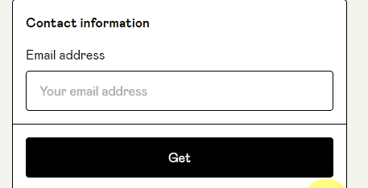
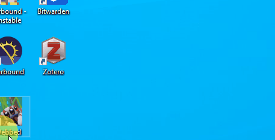

Make a Map in Blender
Contributed by Morgan Elder
Description
This guide describes the download, installation, and usage of Blender-OSM in Blender. Blender is free and open-source software for creating
Requirements
- Download and install Blender
- Version 3.3.1 was used in this tutorial.
Instructions
Downloading Blender-OSM
- Download the free Blender addon: Blender-OSM
- Enter $0 into the price box
- The entered amount is only a donation. Amounts greater than $0 are not required to download.
- Enter $0 into the price box
-
Click "I want this"
-
Enter your email and click "Get"

- Click "View Content"
- Download the "blosm" content

Installing Blender-OSM in Blender
- Start the Blender application
- For Windows, click the start icon
- Type "Blender"
- Click the application to start

- Open user preferences and then select Addons
- Click Edit tab
- Click Preferences in dropdown menu
- Click Add-ons
- Install the addon
- Click Install
- Locate and select the blosm.zip file previously downloaded
- Check Downloads folder
- Click Install Add-on
-
Enable the addon in user preferences
- Open again the Add-on menu in preferences
- If not checked, click the check box next to the blender-osm addon
-
Select a directory to store the
Sources
These resources used to create these instructions are free and publicly available.
" Create any City in Blender in 20 Minutes" - CG Geek on YouTube